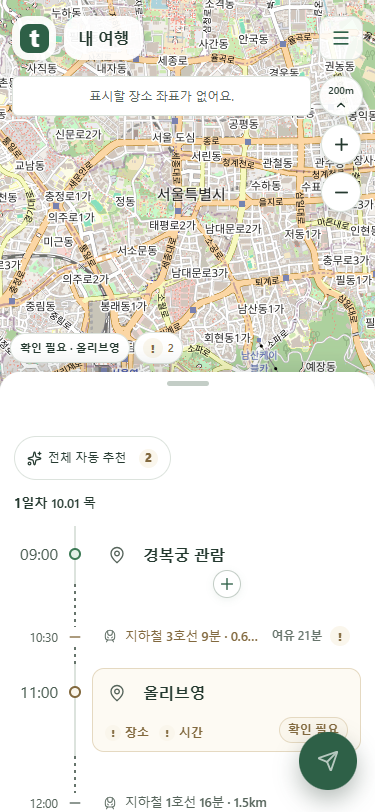
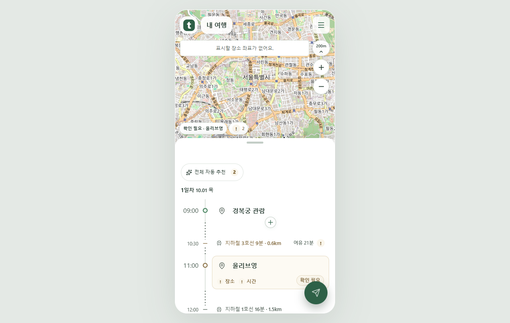
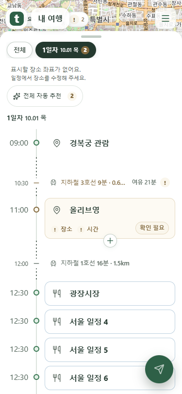
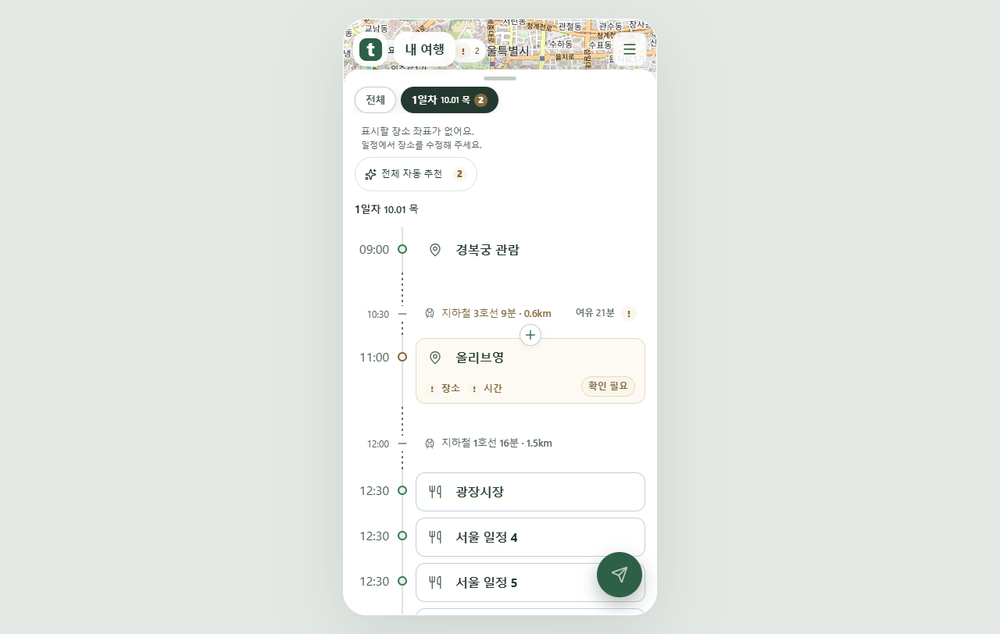
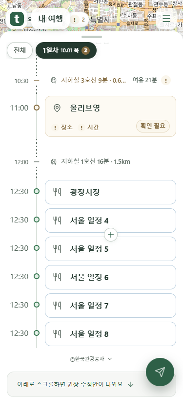
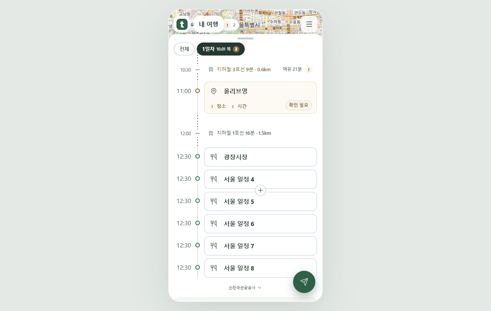
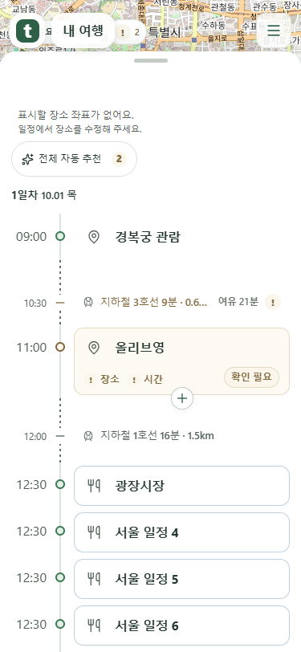
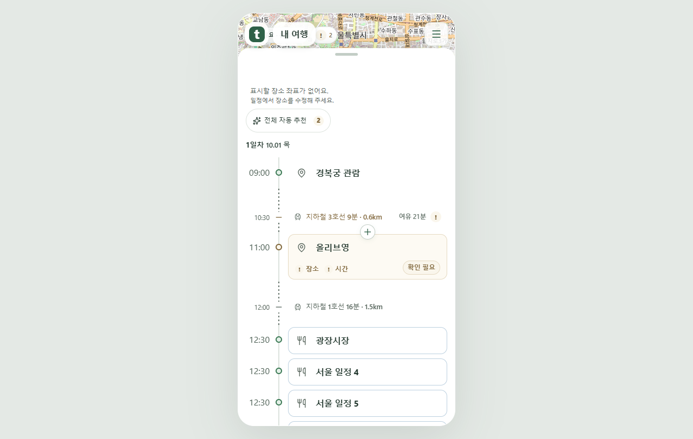
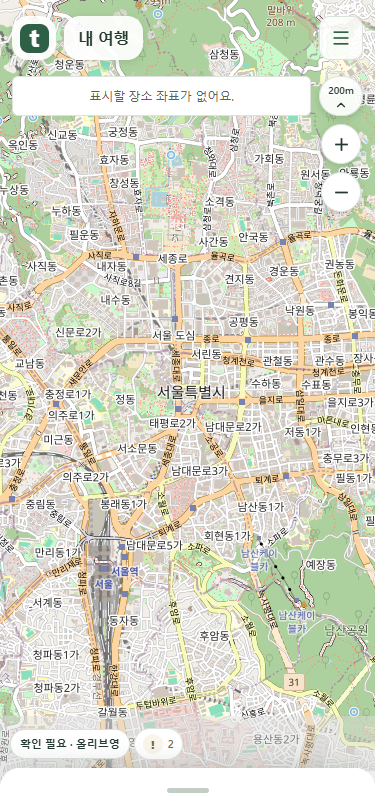
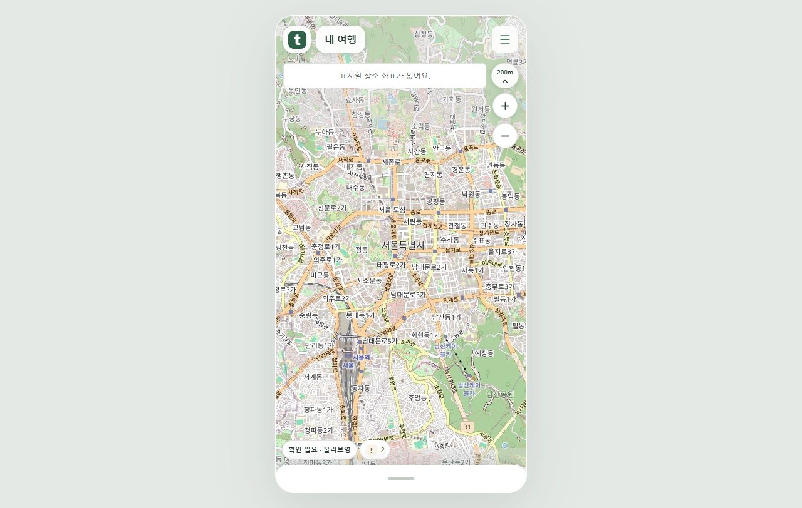

고정 머리말에서 목록 첫머리로 옮겼습니다. 실제 Chrome 촬영 화면입니다.
목록 높이가 보통일 때 안내는 지도 메뉴 아래에 보입니다.


지도 공간이 좁아지면 안내를 스크롤 목록 첫머리로 옮깁니다.


안내를 고정하지 않습니다. 목록과 함께 위로 사라집니다.


안내가 다시 보이고 날짜 탭은 기존 위치를 유지합니다.


목록은 손잡이만 남고 좌표 안내는 지도에서 보입니다.

